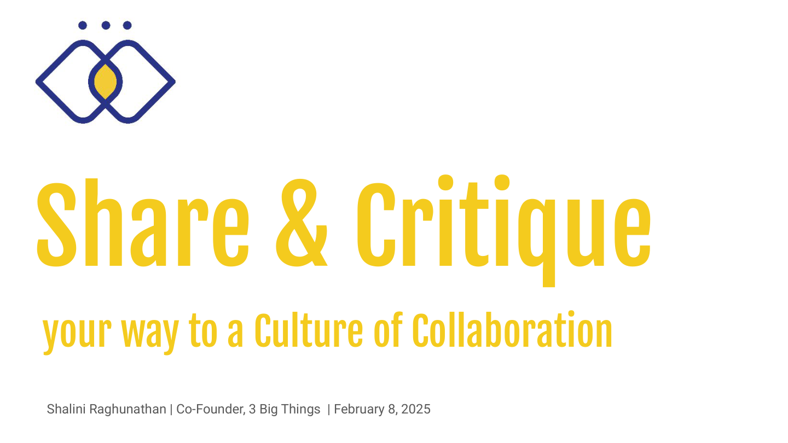
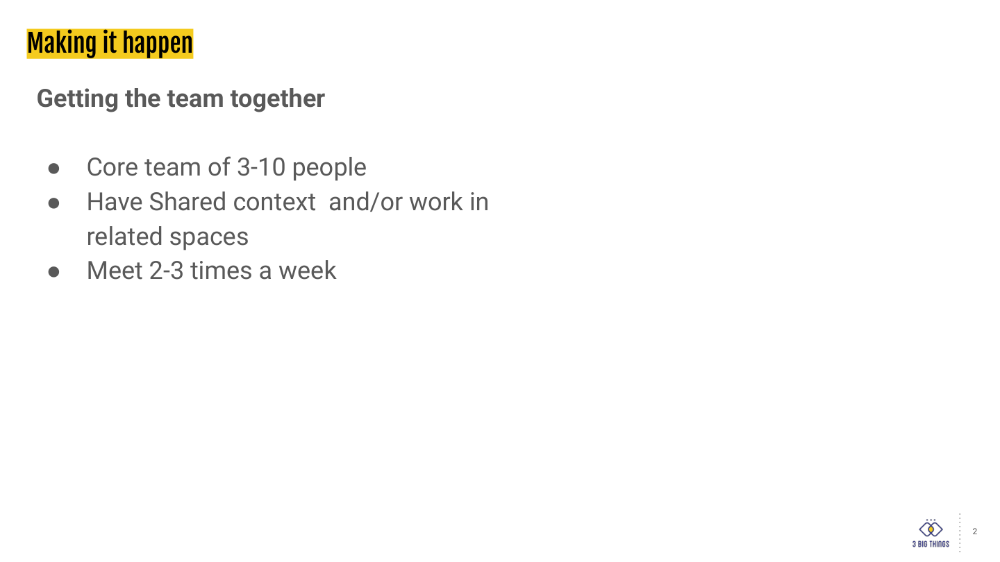
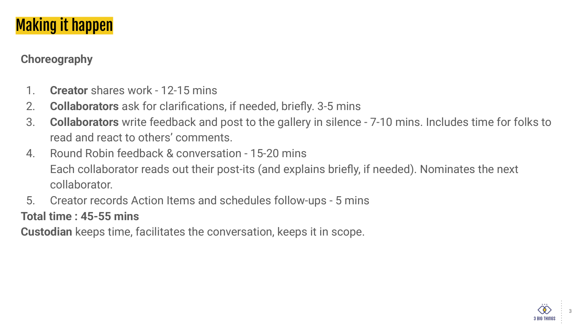
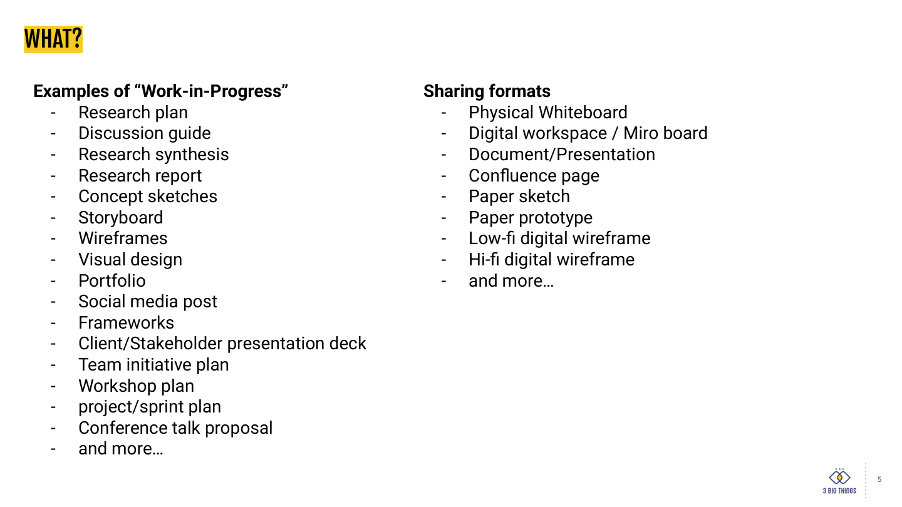
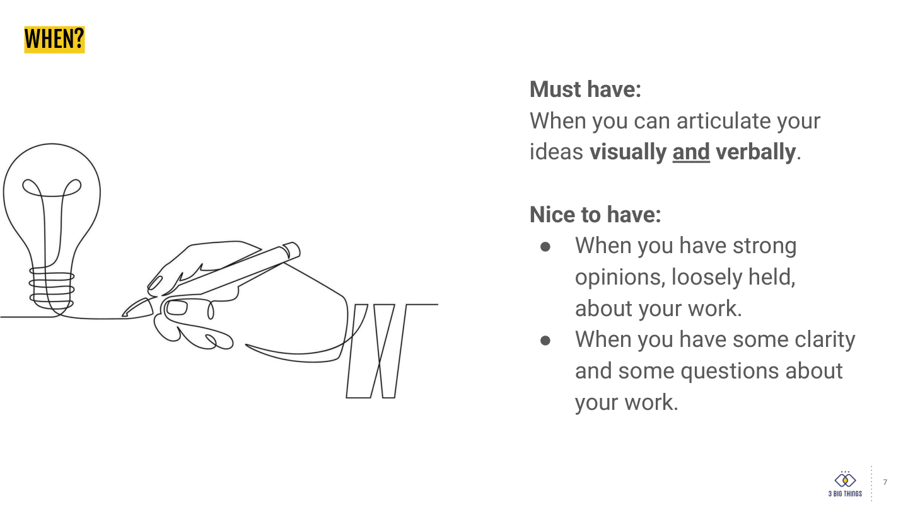
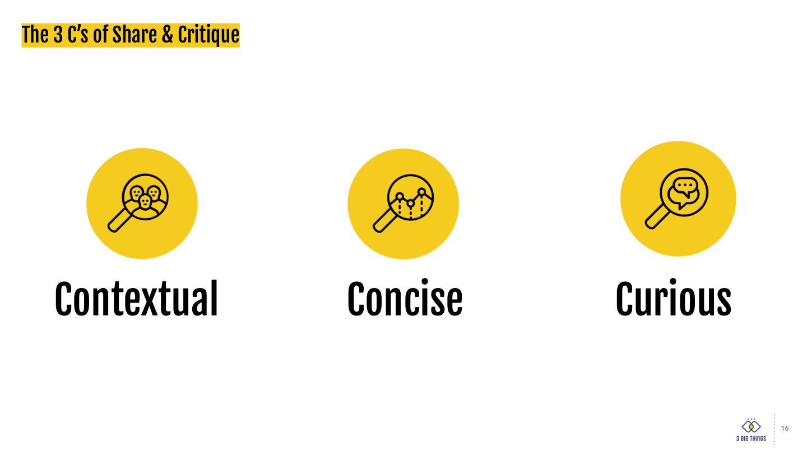
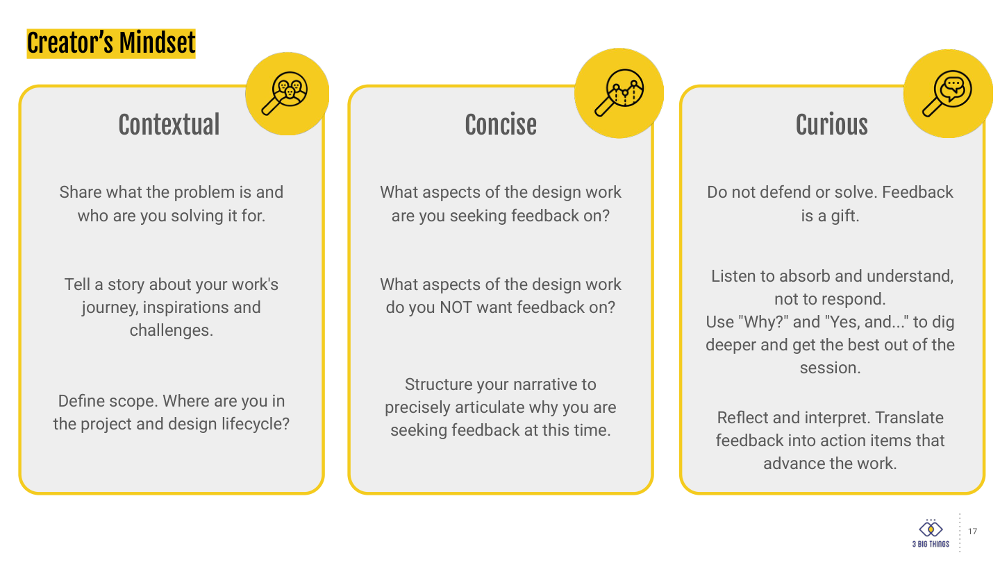
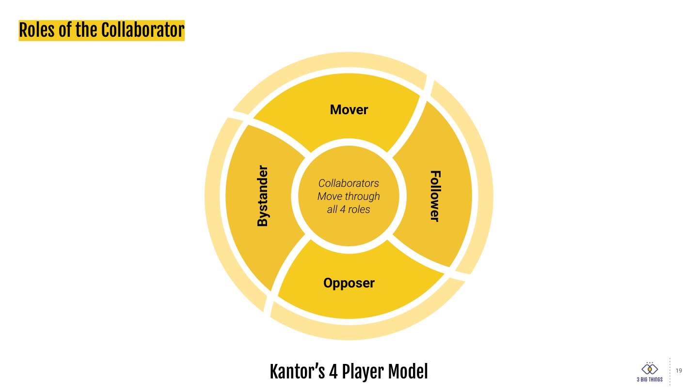
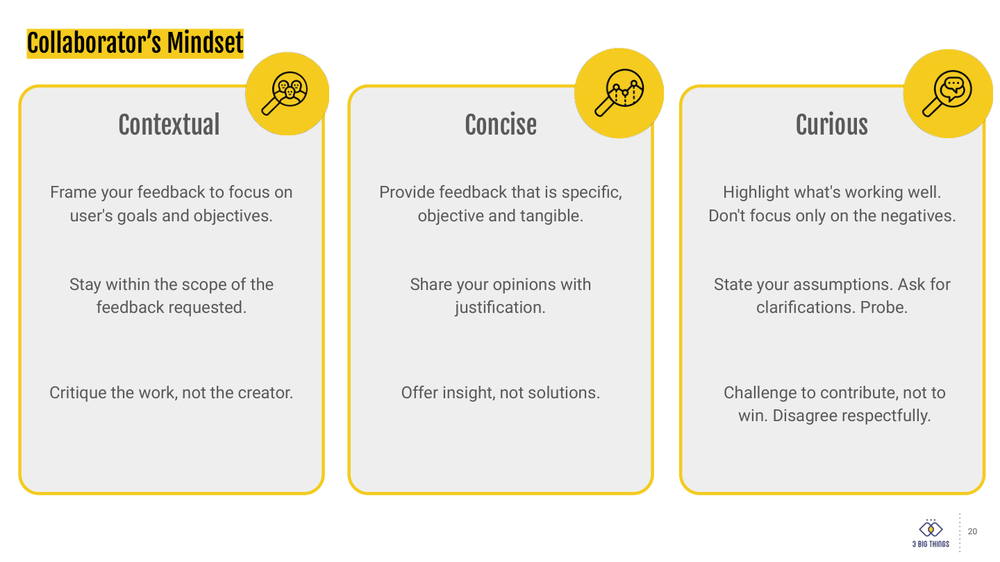
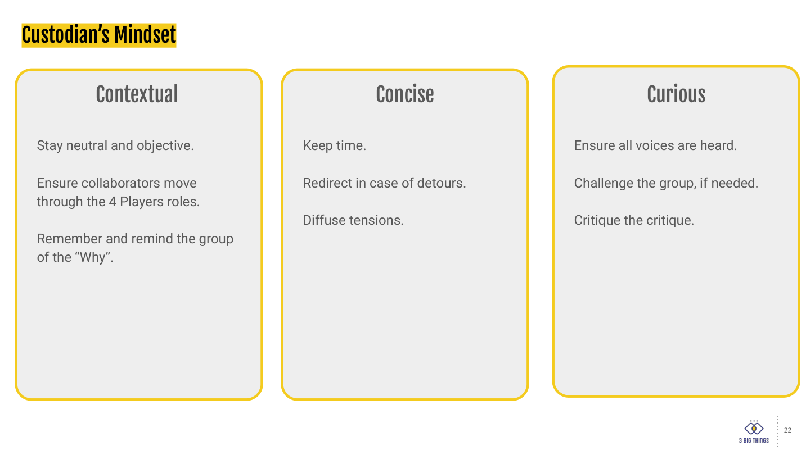

Design leadership / Strategy
Share & Critique
A structured way to put work in front of the team before it is finished: a timed choreography, three named roles, and a shared idea of what useful feedback sounds like. We adopted it to stop critique depending on who happened to be in the room.
The method
Feedback as a practice, not a personality
A design review tends to become the most senior person's opinion, delivered slowly. This method fixes that structurally rather than by asking people to be nicer: the collaborators write in silence first, everybody reads before anyone speaks, and the session ends with the creator writing down action items. The roles rotate, so nobody is permanently the one who judges.
Credit
This method and the deck below are the work of Shalini Raghunathan, Co-Founder of 3 Big Things, presented 8 February 2025. It is not my framework. I adopted it, ran it with the design team, and it became one of the four quality practices on the design quality page.
Ten of the deck's twenty-three slides are shown here, as the source material behind the practice. Every slide is reproduced unaltered and carries the author's mark.


Slide 1
The source. The deck's own title slide, carrying its author, her company and the date it was presented.


Slide 2
The group. Three to ten people with shared context, meeting two or three times a week. Small enough that everyone speaks, frequent enough that work arrives unfinished.


Slide 3
The choreography, and the reason the method works. Five timed stages across 45 to 55 minutes. Stage three is the important one: feedback is written in silence before anyone speaks, which removes the advantage of whoever thinks fastest out loud.


Slide 5
What counts as work-in-progress. Deliberately wide: a research plan and a sprint plan both qualify. The breadth is what stops the session becoming a visual design review by default.


Slide 7
The readiness test, which is not “when it's finished”. The bar is being able to articulate the idea, not having resolved it.


Slide 16
Contextual, concise, curious. The three words every role is held to, and the spine of the three mindset slides that follow.


Slide 17
The creator. The line that does the most work is what aspects do you NOT want feedback on. Naming that up front is what keeps a session in scope.


Slide 19
Kantor's four player model. Collaborators are expected to move through all four positions rather than settle into one, which is how a group avoids having a permanent critic and a permanent agreer.


Slide 20
The collaborator. Critique the work, not the creator and offer insight, not solutions are the two that change how a review sounds.


Slide 22
The custodian. The role most teams skip, and the one that makes the other two possible. Neutral, keeps time, and critiques the critique.
The remaining thirteen slides are section dividers, repeated role markers and two further reflection frameworks. They are the author's to publish, so they are not reproduced here.